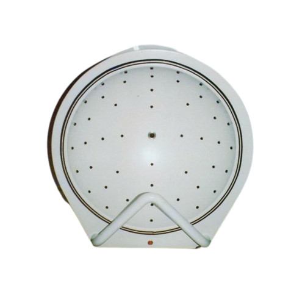

Valoración del órgano de visión
Cómo es sabido, el órgano de la visión se encarga del sentido de la vista. En este sentido su funcionalidad principal es conocida como la agudeza visual definida cómo: “Capacidad del sistema visual para distinguir detalles finos y formas de objetos a una distancia y condiciones específicas”. Por ello, la pérdida de esta capacidad, tanto de forma aguda cómo crónica, representa la principal causa de consulta sanitaria por parte de la población. En este sentido, la valoración de la agudeza visual se realiza por “ensayo error”, donde a través de una serie de pruebas específicas se pone a prueba la capacidad de la persona de hacer uso de su agudeza visual.
Agudeza visual
La agudeza visual es medida a través de un aparato conocido como refractor estenopeico. Dicho dispositivo tapa de forma total la visión de uno de los ojos, dejando distintos agujeros de distintos diámetros para poder ver por el ojo contrario. La persona a la que se le examina debe leer una serie de letras (de distinto tamaño) a través de los distintos agujeros del aparato. Si la persona examinada utiliza distintos agujeros para leer letras de distinto tamaño se puede de sospechar un error de refracción.
La confirmación de los errores de refracción se realiza en dos tiempos; a través de la lectura de letras de distinto tamaño ubicadas a una distancia aproximada a 20 metros y de 36 centímetros de la persona. La persona debe ser capaz de leer las letras con ambos ojos por separado, tanto para la distancia de 20 metros como para la de 36 centímetros para confirmar una prueba anodina. La notación de la prueba se realiza a través de la prueba de Snellen. Se considera la última línea que la persona ha sido capaz leer correctamente, definiendo “leer correctamente” cómo: “La lectura correcta de, al menos, la mitad de las letras de una misma fila”.
A su vez, durante la prueba de la agudeza visual, se puede hacer uso de un oftalmoscopio; el cual corrige de forma artificial la visión del paciente hasta que es capaz de realizar la lectura de la última fila de las letras (tanto lejana como cercana) de forma exitosa. Teniendo en cuenta los resultados de la prueba visual, podemos destacar 3 situaciones, a saber:
Miopía: Definida como: “Pérdida de la agudeza visual a larga distancia”. En este contexto, la córnea de la persona presenta demasiada curvatura o la longitud del ojo es excesiva; teniendo como consecuencia que el punto focal del ojo quede por delante de la retina.
Hipermetropía: Definida como: “Pérdida de la agudeza visual a corta distancia”. En este contexto, la córnea de la persona presenta poca curvatura o la longitud del ojo es demasiado corta; teniendo como consecuencia que el punto focal del ojo quede por detrás de la retina.
Astigmatismo: Definida cómo: “Pérdida de la agudeza visual independiente me de la distancia”. En este contexto, la córnea o el cristalino no presenta una curvatura clara; teniendo como consecuencia que el punto focal de ojo quede en cualquier posición (tanto delante como detrás de la retina).
Presbicia: Definida cómo: “Pérdida de la agudeza visual debido a la disminución de la capacidad acomodativa de la córnea”. En este contexto, el ojo pierde su capacidad para cambiar de curvatura la retina, teniendo como consecuencia una dificultad para alternar entre agudeza visual a larga y corta distancia. Esta situación generalmente se da con el envejecimiento de la persona.
Anisometropía: Definida como: “Diferencia de agudeza visual percibida entre ambos ojos”. En este contexto, cuando la diferencia entre ojos es excesiva, puede dificultar la creación de imágenes única conllevando a una visión doble.
Exploración del campo visual
El campo visual es conocido como “todos aquellos objetos que pueden ser observados por una persona una vez fijada su punto de visión en un objeto concreto”. Se trata de otro de los grandes campos a la hora de realizar la exploración oftalmológica de la persona. Su alteración puede ofrecernos indicios de ciertas patologías leves y/o graves de una forma temprana, siendo una de las más características el glaucoma.
El campo visual puede dividirse en cuatro regiones bien diferencias por cada ojo.
Valoración del campo visual
La valoración del campo visual se realiza por confrontación. Es decir, la persona y el sanitario se centra uno en frente al otro. Tras ello, el sanitario pide a la persona que tape uno de su ojos y que centre su mirada en la nariz del sanitario. Con la mirada de la persona fijada en la nariz del sanitario y un ojo cerrado, el sanitario comienza a realizar movimientos con los dedos en todos los cuadrantes del campo visual. A continuación, este procedimiento se realiza en el ojo contrario. La presencia de alteraciones en el cualquier cuadrante del campo visual insta a la realización de exámenes más precisos.
En cuanto a pruebas más específicas para la valoración del campo visual encontramos:
Campimetría de Goldman o computerizada: Se trata de un dispositivo dónde la persona es instada a mirar fijamente en un semicírculo que ilumina ciertas regiones (a modo de puntos) de forma intermitente. La persona debe indicar cuando una de esas regiones se ilumine.
Rejilla de Amsler: Se trata de una rejilla con líneas verticales y horizontales y un punto en medio. Para su uso se insta a la persona que observe detenidamente dicha rejilla con cada ojo. Durante el tiempo de observación no deben aparecer puntos en blanco / negro o no se deben notar que las líneas rectas se ondulan. Dicha situación puede ser un indicativo de degeneración macular relacionada con la edad.


Estudio de la visión cromática
La valoración de la visión cromática de la persona se realiza a través del uso de láminas coloreadas de Ishihara. Dichas láminas tienen coloreadas en diferentes colores símbolo y/o números ocultos. Para su realización, se le pide a su persona que lea tantos los símbolos como los números de las láminas. Si la persona es incapaz de leer alguno de los símbolos y/o números ocultos es un indicativo de visión cromática.
Exploración anatómica oftalmológica
Otro de las grandes exploraciones a realizar en la valoración oftalmológica de una persona es la exploración física de sus estructuras anatómicas. Para su realización llevaremos un orden lógico de “fuera hacia dentro”, explorando en una primera instancia aquellas estructuras que se encuentren en el exterior para terminar realizando una exploración interior del ojo.
Exploración anatómica exterior del ojo
La exploración anatómica exterior del ojo se compone la valoración de sus estructuras externas, a saber:
Párpados
Conjuntivas
Músculo extra orbitales
Para su realización se hace uso de una iluminación focal (para mayor facilidad), para ello se suele hacer uso de una lámpara de hendidura. Se trata de un dispositivo similar a un microscopio que permite la visualización de las estructuras anatómicas de forma mas detallada.

Durante la exploración externa se valorarán los sacos lagrimales y se realizará la eversión parpebral inspeccionando signos de inflamación y/o cuerpos extraños.
Finalmente, para la exploración de los músculo extraorbitales, el sanitario pedirá a la persona examinada que mire en 8 direcciones distintos (realizando en total una circunferencia completa con los ojos) fijando su mirada en el dedo del observador (que realizará dichos movimientos)
Exploración anatómica intermedia del ojo
La exploración anatómica intermedia del ojo se compone de la valoración de las siguientes estructuras, a saber:
Córnea
Cámara anterior
Pupila
Cristalino
La exploración se realiza, generalmente, a través de lampara de hendidura.
Para la exploración de la córnea se debe valorar el correcto reflejo definido de la lámpara. Si observamos que el reflejo no es claro debemos sospechar de algún problema en la córnea. A su vez, se realiza una tinción con fluorescencia para valorar la presencia de úlceras o abrasiones.
Para la exploración de la pupila se hace uso de una linterna. Primeramente se valora el tamaño de las pupilas (pupilas expandida: midriasis, pupilas contraídas: miosis) Se valora la respuesta de la pupila al estímulo de la luz valorando su contracción cuando se ejerce luz sobre ella. A su vez, se valora si la pupila contraria se contrae de forma refleja (respuesta consensuada o isocória). La ausencia de respuesta a la luz se conoce como pupilas arreactivas. La ausencia de respuesta consensuada se conoce como anisocória.
Para la valoración del cristalino se debe realizar una valoración cuidadosa de su opacidad y la ubicación de esta. La presencia de opacidades es un indicativo de cataratas.
Exploración anatómica interior del ojo
La exploración anatómica interior del ojo se compone de la valoración de las siguientes estructuras anatómicas, a saber:
Retina
Mácula
Nervio óptico
Esclerótica
En la valoración de las estructuras del interior del ojo se realiza una determinación de la presión intraocular (8-21 mmHg) a través de una prueba conocida como la tonometría. Tras ello, se valora la integridad de la retina, valorando su vascularización y la presencia y/o ausencia de hematomas. A su vez, se localiza la mácula del ojo y se valora su integridad.
La valoración de las estructuras del ojo se puede realizar a través de oftalmoscopia directa, lámpara de hendidura o realizando pruebas específicas como son: Tomografía de Coherencia Óptica (útil para determinar el edema de retina, control de glaucoma, la retinopatía diabética), Angiografía (útil para valorar la vascularización de la retina haciendo uso de fluorescencia) o el ultrasonido (útil para generar imágenes en 2D y 3D del interior del ojo).